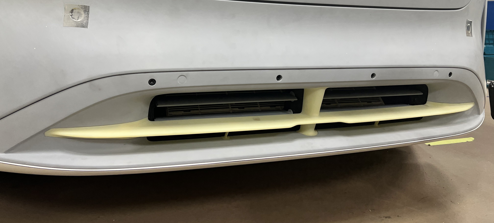
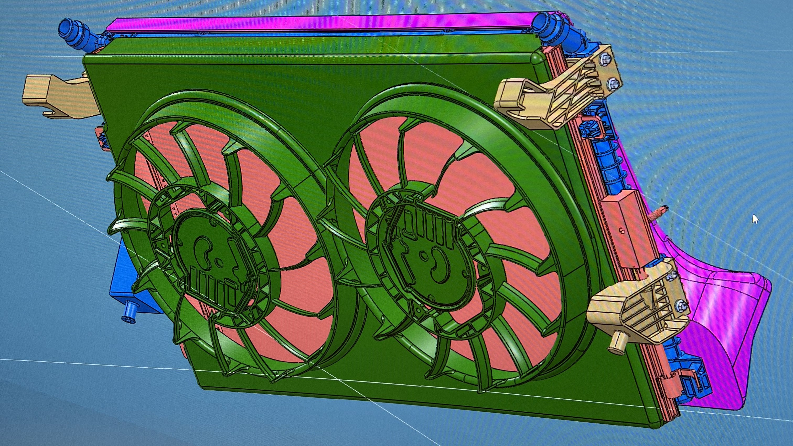

Profile Summary
Multidisciplinary engineer with high-impact experience balancing technical execution at Lawrence Livermore National Laboratory, rapid manufacturing optimization at Lucid Motors, and infrastructure deployment at RMF Engineering. Combines an M.S. in Mechanical Engineering (UC Davis) with an advanced concentration in technology security policy (UC Berkeley) to manage critical engineering systems from early concepts to global scale deployment.
Precision Design & Fab
- • CAD Design & Integration (Catia, Creo)
- • Geometric Dimensioning & Tolerancing (GD&T)
- • Prototyping (3D Printing, MEMS)
- • Manufacturing Optimization (DFM/DFA)
Computation & Test Diagnostics
- • Engineering Scripts (MATLAB, Python)
- • Systems Automation (NI LabVIEW)
- • Experimental Design & Testing
- • Statistical Methods & Modeling
Clearance & Education
- • Active DoE Q Security Clearance Holder
- • Certified Engineer in Training (EIT)
- • M.S. Mechanical Engineering (UC Davis)
- • Advanced Tech Policy Concentration (UC Berkeley)
Thermal Fluid Systems & Aerodynamics

Airflow & Aerodynamic Drag Optimization
Managed wind tunnel testing cycles using full-scale experimental vehicle models. Mapped out mass volumetric flow rates and active grille shutter (AGS) configurations to optimize electric vehicle cooling flow, charging, and range.
Methodologies Used: Programmed localized multi-point sensor automated tracking layouts in a custom National Instruments LabVIEW environment to parse air profile metrics under continuous rolling-road simulation bounds.
Radiator Fleet Manufacturing Life Cycle Study
Drafted environmental study of commercial vehicle aluminum-copper heat exchanger production. Evaluated atmospheric carbon footprints and proposed alternatives for brazing process to reduce per-unit energy consumption.
Precision Structural Engineering & Metrology

250-Ton Load Cell System Fixturing
Generated engineering documentation and geometric tolerance prints (GD&T) supporting high-capacity structural testing at high load.
Mechanical Parameters: Mechanical load distribution, structural rigidity, and assembly tolerances with high safety factors to insulate sensitive multi-ton measurement links from shear vectors.
Technology Policy & Global Security Strategy
U.S. HALEU Leasing Operations (HALO) Program
Authored an executive policy memo proposing legislative updates to secure Small Modular Reactor (SMR) export dominance. Developed fuel cycle alternatives where international purchasers lease HALEU fuel from the US, advancing the domestic supply chain and neutralizing nuclear nonproliferation concerns.
Open Skies II Trilateral Transparency Agreement
Authored a strategic alternative to arms control, linking the US, Russia, and China. Replaced traditional disarmament negotiations with a transparency framework involving unarmed surveillance flights.
Treaty Mechanics: Outlined imaging equipment capabilities limitations, sharing metrics, and a comparative operational matrix to reduce strategic parity uncertainties between peers.
Econometric Analysis of Global AI Patents
Built a multi-variable panel dataset (2013-2023) separating regional variations over time to track macroeconomic conversion rates from open research indexes into issued technology patents.
Statistical Fitness: Formulated region/year fixed-effects mathematical models establishing that a 1% expansion in academic publications matches a 0.98% lift in local patent rate.
Advanced Manufacturing & Microfluidics
SLA 3D Printing Optimization Study
Investigated commercial stereolithography (SLA) roughness and dimensional repeatability parameters. Designed process mapping to track optimal printing thresholds while securing target structural resolution.
Chip-Scale Hemostasis Force Sensors
Research proposal of engineered micro-scale hemostasis blood parameter device. Designed a microfluidic architecture to evaluate early-stage platelet clot retraction kinetics via silicon flexible cantilever beams.